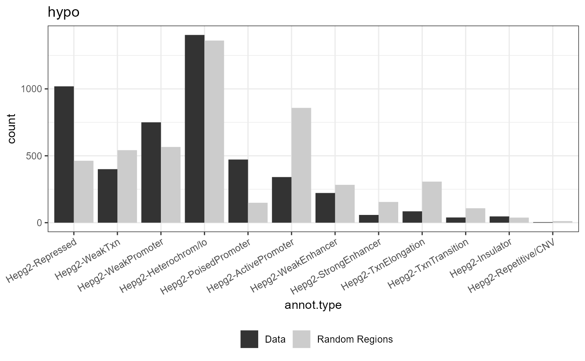

vignettes/methylation_analysisRmd.Rmd
methylation_analysisRmd.Rmd#Use the bed files from the tracks and tables folder
# Check for the gene LIG4#file <- fread(file="data/diffMethTable_site_cmp1.csv", sep = ",")
#bg <- copy(file)
#bg <- bg[,.(Chromosome, Start, End=Start+1, cgid)]
#fwrite(bg, row.names=F, file = "rnb_run_pilot/differential_methylation_data/background.txt", quote = F, sep="\t", col.names = F)
#hyper <- file[diffmeth.p.val<0.0001 & mean.diff>0.3,]
#great_hyper <- hyper[,.(Chromosome, Start, End=Start+1, cgid)]
#hypo <- file[diffmeth.p.val<10e-14 & mean.diff< -0.7,]
#great_hypo <- hypo[,.(Chromosome, Start, End=Start+1, cgid)]
#fwrite(file, row.names=F, file = paste0(folder, "diffMethTable_significant01_cmp_", i, ".txt"), quote = F, sep="\t")
#fwrite(great_hyper, row.names=F, file = "rnb_run_pilot/differential_methylation_data/great_significant_hyper.txt", quote = F, sep="\t", col.names = F)
#fwrite(great_hypo, row.names=F, file = "rnb_run_pilot/differential_methylation_data/great_significant_hypo.txt", quote = F, sep="\t", col.names = F)
data <- list()
data[["hypo"]] <- import.bed("../inst/extdata/great_significant_hypo.txt")
data[["hyper"]]<- import.bed("../inst/extdata/great_significant_hyper.txt")
annots = c('hg19_Hepg2-chromatin')
annots_gr = build_annotations(genome = 'hg19', annotations = annots)## Building hmms...## Downloading chromHMM track for Hepg2for (dataset in data){
genome(dataset) <- rep("hg19", length(genome(dataset)))
result <- annotate_regions(dataset, annotations=annots_gr, minoverlap = 1L, ignore.strand = TRUE, quiet = FALSE)
rnd_annots = annotate_regions(regions = randomize_regions(dataset),annotations = annots_gr,ignore.strand = TRUE)
p_annots = plot_annotation(annotated_regions = result, annotated_random = rnd_annots)
print(p_annots)
}## Annotating...## Randomizing regions...## Annotating...
## Annotating...## Randomizing regions...## Annotating...background <- import.bed("../inst/extdata/background.txt")
genome(background) <- rep("hg19", length(genome(background)))
for (dataset in names(data)){
genome(data[[dataset]]) <- rep("hg19", length(genome(data[[dataset]])))
background2 <- background[sample(1:length(background), length(data[[dataset]])),]
result <- annotate_regions(data[[dataset]], annotations=annots_gr, minoverlap = 1L, ignore.strand = TRUE, quiet = FALSE)
rnd_annots = annotate_regions(regions = background2,annotations = annots_gr,ignore.strand = TRUE)
p_annots = plot_annotation(annotated_regions = result, annotated_random = rnd_annots)
print(p_annots+ggtitle(dataset))
}## Annotating...
## Annotating...
## Annotating...
## Annotating...
builtin_annotations()## [1] "dm3_genes_1to5kb"
## [2] "dm6_genes_1to5kb"
## [3] "galGal5_genes_1to5kb"
## [4] "hg19_genes_1to5kb"
## [5] "hg38_genes_1to5kb"
## [6] "mm9_genes_1to5kb"
## [7] "mm10_genes_1to5kb"
## [8] "rn4_genes_1to5kb"
## [9] "rn5_genes_1to5kb"
## [10] "rn6_genes_1to5kb"
## [11] "dm3_genes_promoters"
## [12] "dm6_genes_promoters"
## [13] "galGal5_genes_promoters"
## [14] "hg19_genes_promoters"
## [15] "hg38_genes_promoters"
## [16] "mm9_genes_promoters"
## [17] "mm10_genes_promoters"
## [18] "rn4_genes_promoters"
## [19] "rn5_genes_promoters"
## [20] "rn6_genes_promoters"
## [21] "dm3_genes_cds"
## [22] "dm6_genes_cds"
## [23] "galGal5_genes_cds"
## [24] "hg19_genes_cds"
## [25] "hg38_genes_cds"
## [26] "mm9_genes_cds"
## [27] "mm10_genes_cds"
## [28] "rn4_genes_cds"
## [29] "rn5_genes_cds"
## [30] "rn6_genes_cds"
## [31] "dm3_genes_5UTRs"
## [32] "dm6_genes_5UTRs"
## [33] "galGal5_genes_5UTRs"
## [34] "hg19_genes_5UTRs"
## [35] "hg38_genes_5UTRs"
## [36] "mm9_genes_5UTRs"
## [37] "mm10_genes_5UTRs"
## [38] "rn4_genes_5UTRs"
## [39] "rn5_genes_5UTRs"
## [40] "rn6_genes_5UTRs"
## [41] "dm3_genes_exons"
## [42] "dm6_genes_exons"
## [43] "galGal5_genes_exons"
## [44] "hg19_genes_exons"
## [45] "hg38_genes_exons"
## [46] "mm9_genes_exons"
## [47] "mm10_genes_exons"
## [48] "rn4_genes_exons"
## [49] "rn5_genes_exons"
## [50] "rn6_genes_exons"
## [51] "dm3_genes_firstexons"
## [52] "dm6_genes_firstexons"
## [53] "galGal5_genes_firstexons"
## [54] "hg19_genes_firstexons"
## [55] "hg38_genes_firstexons"
## [56] "mm9_genes_firstexons"
## [57] "mm10_genes_firstexons"
## [58] "rn4_genes_firstexons"
## [59] "rn5_genes_firstexons"
## [60] "rn6_genes_firstexons"
## [61] "dm3_genes_introns"
## [62] "dm6_genes_introns"
## [63] "galGal5_genes_introns"
## [64] "hg19_genes_introns"
## [65] "hg38_genes_introns"
## [66] "mm9_genes_introns"
## [67] "mm10_genes_introns"
## [68] "rn4_genes_introns"
## [69] "rn5_genes_introns"
## [70] "rn6_genes_introns"
## [71] "dm3_genes_intronexonboundaries"
## [72] "dm6_genes_intronexonboundaries"
## [73] "galGal5_genes_intronexonboundaries"
## [74] "hg19_genes_intronexonboundaries"
## [75] "hg38_genes_intronexonboundaries"
## [76] "mm9_genes_intronexonboundaries"
## [77] "mm10_genes_intronexonboundaries"
## [78] "rn4_genes_intronexonboundaries"
## [79] "rn5_genes_intronexonboundaries"
## [80] "rn6_genes_intronexonboundaries"
## [81] "dm3_genes_exonintronboundaries"
## [82] "dm6_genes_exonintronboundaries"
## [83] "galGal5_genes_exonintronboundaries"
## [84] "hg19_genes_exonintronboundaries"
## [85] "hg38_genes_exonintronboundaries"
## [86] "mm9_genes_exonintronboundaries"
## [87] "mm10_genes_exonintronboundaries"
## [88] "rn4_genes_exonintronboundaries"
## [89] "rn5_genes_exonintronboundaries"
## [90] "rn6_genes_exonintronboundaries"
## [91] "dm3_genes_3UTRs"
## [92] "dm6_genes_3UTRs"
## [93] "galGal5_genes_3UTRs"
## [94] "hg19_genes_3UTRs"
## [95] "hg38_genes_3UTRs"
## [96] "mm9_genes_3UTRs"
## [97] "mm10_genes_3UTRs"
## [98] "rn4_genes_3UTRs"
## [99] "rn5_genes_3UTRs"
## [100] "rn6_genes_3UTRs"
## [101] "dm3_genes_intergenic"
## [102] "dm6_genes_intergenic"
## [103] "galGal5_genes_intergenic"
## [104] "hg19_genes_intergenic"
## [105] "hg38_genes_intergenic"
## [106] "mm9_genes_intergenic"
## [107] "mm10_genes_intergenic"
## [108] "rn4_genes_intergenic"
## [109] "rn5_genes_intergenic"
## [110] "rn6_genes_intergenic"
## [111] "galGal5_cpg_islands"
## [112] "hg19_cpg_islands"
## [113] "hg38_cpg_islands"
## [114] "mm9_cpg_islands"
## [115] "mm10_cpg_islands"
## [116] "rn4_cpg_islands"
## [117] "rn5_cpg_islands"
## [118] "rn6_cpg_islands"
## [119] "galGal5_cpg_shores"
## [120] "hg19_cpg_shores"
## [121] "hg38_cpg_shores"
## [122] "mm9_cpg_shores"
## [123] "mm10_cpg_shores"
## [124] "rn4_cpg_shores"
## [125] "rn5_cpg_shores"
## [126] "rn6_cpg_shores"
## [127] "galGal5_cpg_shelves"
## [128] "hg19_cpg_shelves"
## [129] "hg38_cpg_shelves"
## [130] "mm9_cpg_shelves"
## [131] "mm10_cpg_shelves"
## [132] "rn4_cpg_shelves"
## [133] "rn5_cpg_shelves"
## [134] "rn6_cpg_shelves"
## [135] "galGal5_cpg_inter"
## [136] "hg19_cpg_inter"
## [137] "hg38_cpg_inter"
## [138] "mm9_cpg_inter"
## [139] "mm10_cpg_inter"
## [140] "rn4_cpg_inter"
## [141] "rn5_cpg_inter"
## [142] "rn6_cpg_inter"
## [143] "hg19_chromatin_Gm12878-ActivePromoter"
## [144] "hg19_chromatin_H1hesc-ActivePromoter"
## [145] "hg19_chromatin_Hepg2-ActivePromoter"
## [146] "hg19_chromatin_Hmec-ActivePromoter"
## [147] "hg19_chromatin_Hsmm-ActivePromoter"
## [148] "hg19_chromatin_Huvec-ActivePromoter"
## [149] "hg19_chromatin_K562-ActivePromoter"
## [150] "hg19_chromatin_Nhek-ActivePromoter"
## [151] "hg19_chromatin_Nhlf-ActivePromoter"
## [152] "hg19_chromatin_Gm12878-WeakPromoter"
## [153] "hg19_chromatin_H1hesc-WeakPromoter"
## [154] "hg19_chromatin_Hepg2-WeakPromoter"
## [155] "hg19_chromatin_Hmec-WeakPromoter"
## [156] "hg19_chromatin_Hsmm-WeakPromoter"
## [157] "hg19_chromatin_Huvec-WeakPromoter"
## [158] "hg19_chromatin_K562-WeakPromoter"
## [159] "hg19_chromatin_Nhek-WeakPromoter"
## [160] "hg19_chromatin_Nhlf-WeakPromoter"
## [161] "hg19_chromatin_Gm12878-PoisedPromoter"
## [162] "hg19_chromatin_H1hesc-PoisedPromoter"
## [163] "hg19_chromatin_Hepg2-PoisedPromoter"
## [164] "hg19_chromatin_Hmec-PoisedPromoter"
## [165] "hg19_chromatin_Hsmm-PoisedPromoter"
## [166] "hg19_chromatin_Huvec-PoisedPromoter"
## [167] "hg19_chromatin_K562-PoisedPromoter"
## [168] "hg19_chromatin_Nhek-PoisedPromoter"
## [169] "hg19_chromatin_Nhlf-PoisedPromoter"
## [170] "hg19_chromatin_Gm12878-StrongEnhancer"
## [171] "hg19_chromatin_H1hesc-StrongEnhancer"
## [172] "hg19_chromatin_Hepg2-StrongEnhancer"
## [173] "hg19_chromatin_Hmec-StrongEnhancer"
## [174] "hg19_chromatin_Hsmm-StrongEnhancer"
## [175] "hg19_chromatin_Huvec-StrongEnhancer"
## [176] "hg19_chromatin_K562-StrongEnhancer"
## [177] "hg19_chromatin_Nhek-StrongEnhancer"
## [178] "hg19_chromatin_Nhlf-StrongEnhancer"
## [179] "hg19_chromatin_Gm12878-WeakEnhancer"
## [180] "hg19_chromatin_H1hesc-WeakEnhancer"
## [181] "hg19_chromatin_Hepg2-WeakEnhancer"
## [182] "hg19_chromatin_Hmec-WeakEnhancer"
## [183] "hg19_chromatin_Hsmm-WeakEnhancer"
## [184] "hg19_chromatin_Huvec-WeakEnhancer"
## [185] "hg19_chromatin_K562-WeakEnhancer"
## [186] "hg19_chromatin_Nhek-WeakEnhancer"
## [187] "hg19_chromatin_Nhlf-WeakEnhancer"
## [188] "hg19_chromatin_Gm12878-Insulator"
## [189] "hg19_chromatin_H1hesc-Insulator"
## [190] "hg19_chromatin_Hepg2-Insulator"
## [191] "hg19_chromatin_Hmec-Insulator"
## [192] "hg19_chromatin_Hsmm-Insulator"
## [193] "hg19_chromatin_Huvec-Insulator"
## [194] "hg19_chromatin_K562-Insulator"
## [195] "hg19_chromatin_Nhek-Insulator"
## [196] "hg19_chromatin_Nhlf-Insulator"
## [197] "hg19_chromatin_Gm12878-TxnTransition"
## [198] "hg19_chromatin_H1hesc-TxnTransition"
## [199] "hg19_chromatin_Hepg2-TxnTransition"
## [200] "hg19_chromatin_Hmec-TxnTransition"
## [201] "hg19_chromatin_Hsmm-TxnTransition"
## [202] "hg19_chromatin_Huvec-TxnTransition"
## [203] "hg19_chromatin_K562-TxnTransition"
## [204] "hg19_chromatin_Nhek-TxnTransition"
## [205] "hg19_chromatin_Nhlf-TxnTransition"
## [206] "hg19_chromatin_Gm12878-TxnElongation"
## [207] "hg19_chromatin_H1hesc-TxnElongation"
## [208] "hg19_chromatin_Hepg2-TxnElongation"
## [209] "hg19_chromatin_Hmec-TxnElongation"
## [210] "hg19_chromatin_Hsmm-TxnElongation"
## [211] "hg19_chromatin_Huvec-TxnElongation"
## [212] "hg19_chromatin_K562-TxnElongation"
## [213] "hg19_chromatin_Nhek-TxnElongation"
## [214] "hg19_chromatin_Nhlf-TxnElongation"
## [215] "hg19_chromatin_Gm12878-WeakTxn"
## [216] "hg19_chromatin_H1hesc-WeakTxn"
## [217] "hg19_chromatin_Hepg2-WeakTxn"
## [218] "hg19_chromatin_Hmec-WeakTxn"
## [219] "hg19_chromatin_Hsmm-WeakTxn"
## [220] "hg19_chromatin_Huvec-WeakTxn"
## [221] "hg19_chromatin_K562-WeakTxn"
## [222] "hg19_chromatin_Nhek-WeakTxn"
## [223] "hg19_chromatin_Nhlf-WeakTxn"
## [224] "hg19_chromatin_Gm12878-Repressed"
## [225] "hg19_chromatin_H1hesc-Repressed"
## [226] "hg19_chromatin_Hepg2-Repressed"
## [227] "hg19_chromatin_Hmec-Repressed"
## [228] "hg19_chromatin_Hsmm-Repressed"
## [229] "hg19_chromatin_Huvec-Repressed"
## [230] "hg19_chromatin_K562-Repressed"
## [231] "hg19_chromatin_Nhek-Repressed"
## [232] "hg19_chromatin_Nhlf-Repressed"
## [233] "hg19_chromatin_Gm12878-Heterochrom/lo"
## [234] "hg19_chromatin_H1hesc-Heterochrom/lo"
## [235] "hg19_chromatin_Hepg2-Heterochrom/lo"
## [236] "hg19_chromatin_Hmec-Heterochrom/lo"
## [237] "hg19_chromatin_Hsmm-Heterochrom/lo"
## [238] "hg19_chromatin_Huvec-Heterochrom/lo"
## [239] "hg19_chromatin_K562-Heterochrom/lo"
## [240] "hg19_chromatin_Nhek-Heterochrom/lo"
## [241] "hg19_chromatin_Nhlf-Heterochrom/lo"
## [242] "hg19_chromatin_Gm12878-Repetitive/CNV"
## [243] "hg19_chromatin_H1hesc-Repetitive/CNV"
## [244] "hg19_chromatin_Hepg2-Repetitive/CNV"
## [245] "hg19_chromatin_Hmec-Repetitive/CNV"
## [246] "hg19_chromatin_Hsmm-Repetitive/CNV"
## [247] "hg19_chromatin_Huvec-Repetitive/CNV"
## [248] "hg19_chromatin_K562-Repetitive/CNV"
## [249] "hg19_chromatin_Nhek-Repetitive/CNV"
## [250] "hg19_chromatin_Nhlf-Repetitive/CNV"
## [251] "hg19_enhancers_fantom"
## [252] "hg38_enhancers_fantom"
## [253] "mm9_enhancers_fantom"
## [254] "mm10_enhancers_fantom"
## [255] "hg19_lncrna_gencode"
## [256] "hg38_lncrna_gencode"
## [257] "mm10_lncrna_gencode"
## [258] "dm3_basicgenes"
## [259] "dm6_basicgenes"
## [260] "galGal5_basicgenes"
## [261] "hg19_basicgenes"
## [262] "hg38_basicgenes"
## [263] "mm9_basicgenes"
## [264] "mm10_basicgenes"
## [265] "rn4_basicgenes"
## [266] "rn5_basicgenes"
## [267] "rn6_basicgenes"
## [268] "galGal5_cpgs"
## [269] "hg19_cpgs"
## [270] "hg38_cpgs"
## [271] "mm9_cpgs"
## [272] "mm10_cpgs"
## [273] "rn4_cpgs"
## [274] "rn5_cpgs"
## [275] "rn6_cpgs"
## [276] "hg19_Gm12878-chromatin"
## [277] "hg19_H1hesc-chromatin"
## [278] "hg19_Hepg2-chromatin"
## [279] "hg19_Hmec-chromatin"
## [280] "hg19_Hsmm-chromatin"
## [281] "hg19_Huvec-chromatin"
## [282] "hg19_K562-chromatin"
## [283] "hg19_Nhek-chromatin"
## [284] "hg19_Nhlf-chromatin"library(TxDb.Hsapiens.UCSC.hg19.knownGene)
txdb <- TxDb.Hsapiens.UCSC.hg19.knownGene
for (dataset in names(data)){
genes <- seq2gene(data[[dataset]], tssRegion = c(-3000, 3000), flankDistance = 3000, TxDb=txdb)
kkm <- enrichKEGG(gene = genes,
organism = 'human',
pvalueCutoff = 0.05)
print(dotplot(kkm))
engo <- enrichGO(gene = genes,
OrgDb = org.Hs.eg.db,
ont = "BP",
pAdjustMethod = "BH",
pvalueCutoff = 0.01,
qvalueCutoff = 0.05,
readable = TRUE)
print(dotplot(engo))
}## Reading KEGG annotation online: "https://rest.kegg.jp/link/hsa/pathway"...## Warning in utils::download.file(url, quiet = TRUE, method = method, ...): the
## 'wininet' method is deprecated for http:// and https:// URLs## Reading KEGG annotation online: "https://rest.kegg.jp/list/pathway"...## Warning in utils::download.file(url, quiet = TRUE, method = method, ...): the
## 'wininet' method is deprecated for http:// and https:// URLs